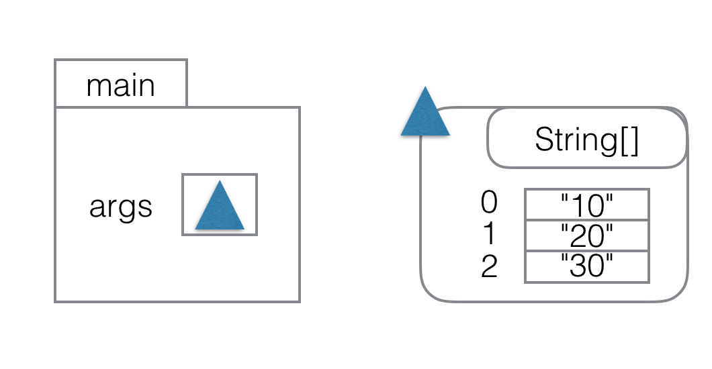
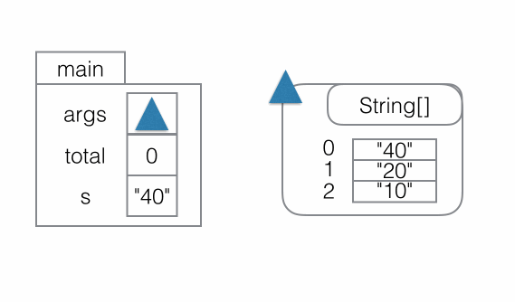
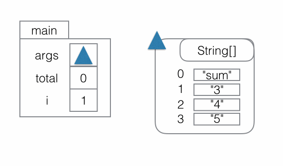

10.1 — Arrays of command line arguments, loops
One of the most common places we confront Arrays in Java is in the main() method. Recall from before the structure of the main() method:
class SampleMain {
public static void main(String[] args) {
// The java command starts running here, with any values provided
}
}When we run the java command, the Java system collects the values provided on the command line, puts them all into an Array of Strings, and passes a reference to that Array as the argument to the main() method (args in the above example). So, for example, if we compile the above class and run it:
$ java SampleMain 10 20 30The parameter args will contain a reference to an array containing the strings "10", "20", and "30". Pictorially, we’d draw this as:

Arrays, just like objects, take up space on the heap (not on the stack), and parameters, variables, and fields store references to them. The components of an array are stored at indices counting up from 0.
Do Now! According to the image above, what value is stored in the array at index 0?

We can access the elements of arrays by using the array index expression on a reference to an array. So, for example, we could print out the second element (the value at index 1) of the array above by writing:
System.out.println(args[1]);Do Now! Paste this line into the main method and run the code with java SampleMain 10 20 30. Ensure that the output is 20.
The expression args[1] first looks up the reference stored in args and then looks up the value in the index labeled 1. As we learned earlier, we can put any expression that computes an int into the brackets. We could write args[1 + 1] and get the value at index 2 ("30" in this case), for example.
What happens if you provide an index that isn’t in the range of 0-2 for this example?
Do Now! In the code above, change the 1 in the brackets to an integer value that is not in that range. Run the program with java SampleMain 10 20 30 and use the output to fill in the blanks.
So far, we’ve just seen how to access elements with a number we knew ahead of time when writing the program. We can also use an element-wise loop, also known as a for-each loop, along with a variable, to get access to each of the elements of the array in turn, and aggregate their values together:
There are a few ideas happening here:
-
The variable
totalis created with the starting value0, and then it gets updated by the variable assignment in the body of the loop. -
The loop, started with
for, runs the loop body—the expressions in between the curly braces—once for each element in the Array that is referenced byargs. -
Each time the loop body is run, the variable
sgets its current value set to the next element, starting with the element at index0.
As the program runs, we could visualize the changes like this:

Do Now! Use the information given in this step to answer the questions below.
We can also think about these values in tabular form. We often use the word iteration to mean “one run of the loop body”:
|
|
Iteration |
|
Value of s |
|
total before |
|
total after |
|
|
1st |
|
"40" |
|
0 |
|
40 |
|
|
2nd |
|
"20" |
|
40 |
|
60 |
|
|
3rd |
|
"10" |
|
60 |
|
70 |
These element-wise or for-each loops are extremely useful when the program needs to process all the elements of an array. The general form is:
for(Type t: arr) {
... loop body ...
}where Type is the type of elements (like int, String, or Tweet) and arr is an array containing elements of that type. The name of variable t is up to us, the programmer, as with parameters and field names. The loop body is any sequence of statements, and these statements can use the declared variable.
(for-each loops also work for types other than arrays. We’ll see that in detail later on.)
If we want to write a program that uses a subset of the values in an array, we need a loop that provides more control than only allowing us to visit every element. A common way to manage these situations is with a more general version of the for loop.
Consider a calculator-like program that takes as the first command-line argument an operation to perform, followed by a list of numbers:
$ java CalcMain sum 3 4 5
12
$ java CalcMain product 3 4 5
60
$ java CalcMain mean 1 2 3 5 5 8
4To implement this, we need two pieces:
-
First, to choose the operation to perform by looking at the first element of the array
-
Second, to perform the aggregation on the remaining elements
Do Now! Answer the questions below based on the program described above.
The first part (choosing the operation to perform) is simple to accomplish by looking at the element at index 0. The second part (performing the aggregation) requires looking at all the remaining elements, starting at index 1. Here’s how we would write a program to tackle this:
The key part of this is the new loop structure, which has the same beginning in both the sum and product cases:
for(int i = 1; i < args.length; i = i + 1) { ... loop body ... }Compile and run the program with java CalcMain product 3 2 4
Do Now! What output do you get, and which line in the program printed that output?
for(int i = 1; i < args.length; i = i + 1) { ... loop body ... }The way such a loop runs is as follows:
-
Run the initialization statement – the one before the first semicolon.
-
Evaluate the condition – the expression before the second semicolon. If it evaluates to
false, stop running the loop. Note that this means the loop could run zero times if the condition isfalseat the start. -
Evaluate the loop body.
-
Evaluate the update expression – the last of the three parts of the loop header.
-
Go back to the step in this list checking the condition expression, and proceed from there.
Do Now! Match each portion of the code with the part of the loop that it corresponds to.
If we run the above program with java CalcMain sum 3 4 5, the changes would look like:

Again, in tabular form, we could write it as:
|
|
Iteration |
|
Value of |
|
Value of |
|
|
|
|
|
|
1st |
|
1 |
|
"3" |
|
0 |
|
3 |
|
|
2nd |
|
2 |
|
"4" |
|
3 |
|
7 |
|
|
3rd |
|
3 |
|
"5" |
|
7 |
|
12 |
Summary
- We can run a block of code repeatedly using loops
- Loops are particularly useful for processing all of the elements of an array
- We've seen two kinds of loop:
- Element-wise for loops that let us visit each element in an array
- Counted for loops that let us use a variable that gets updated on each iteration
- Element-wise for loops are simpler, and counted for loops give us more flexibility.